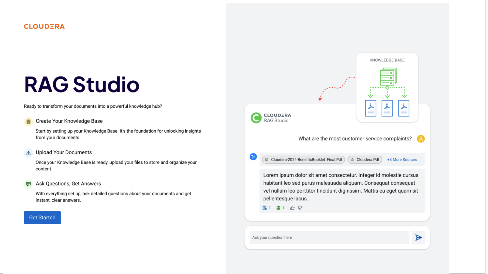

RAG Studio¶
Build retrieval-augmented chatbots on your enterprise data with Cloudera RAG Studio.

Overview¶
RAG Studio provides a UI-first workflow for building knowledge-base chatbots without writing retrieval or embedding code. It covers the full lifecycle from document ingestion to chat interaction to quality analytics:
- A single entry point to create knowledge bases, upload documents, and start chatting
- Seamless progression from prototype to production-grade deployment
- Support for both non-technical business users and ML engineering teams
Customer Use Cases¶
Enterprise teams vary in technical depth. RAG Studio serves all of them:
- Non-technical users can build domain chatbots (HR policy, product FAQs, compliance guidance) without any code
- ML teams can rapidly prototype retrieval pipelines and compare chunking strategies, embedding models, and rerankers — all from the UI
- Enterprises deploy secure, scalable AI on their own data and infrastructure using Cloudera AI Inference (CAII)
Three-step workflow¶

- Create your Knowledge Base — configure chunk size, embedding model, vector store, and optional summarization model
- Upload your documents — drag-and-drop or API-push PDF, Word, Excel, CSV, PowerPoint, Markdown, JSON, and image files
- Ask questions, get answers — chat immediately; every answer cites the source chunks it was grounded on
Quickstart¶
1. Open the app¶
On first launch RAG Studio checks that CAII endpoints (LLM, embeddings, optional reranker) are configured. If not, it redirects to Settings → Studio Settings to set them up.
2. Create a knowledge base¶
Go to Knowledge Bases → Create Knowledge Base and fill in:
| Field | Example |
|---|---|
| Name | UOB Compliance Docs |
| Chunk size (tokens) | 512 |
| Embedding model | Text Embedding Ada 002 |
| Summarization model | gpt-4o (optional) |
Click Save. Advanced options include distance metric (Cosine) and chunk overlap (10%).
3. Upload documents¶
Open the knowledge base, go to Manage, drag-and-drop files, then click Start Upload.
Files are chunked, embedded, and indexed immediately. Supported formats include PDF (.pdf),
Word (.docx), Excel (.xlsx), CSV (.csv), PowerPoint (.pptx), Markdown (.md),
JSON (.json), and images (.jpg, .png).
4. Start a chat¶
Go to Chats, type a question, and press Enter. On first send a session is created automatically. Use Chat Settings to preselect knowledge base(s), response model, and reranking model before sending.
5. Tune settings (optional)¶
From Chat Settings in the chat header, adjust: session name, knowledge bases, response model, reranker, max docs retrieved, HyDE, summary-based filtering, and tool calling.
Why RAG Studio?¶
Flexible¶
Powered by IBM Docling, RAG Studio ingests images, PDFs, and most file types with sophisticated preprocessing. Connect any AI provider — CAII, OpenAI, Azure, AWS Bedrock — or use custom models via the Cloudera Platform.
Fast¶
Non-technical team members can DIY a chatbot for any use case without writing code. ML teams with crowded backlogs prototype and iterate quickly — swap embedding models, chunk sizes, and rerankers from the UI alone.
Smart¶
Built-in bleeding-edge retrieval techniques (HyDE, O-RAG, Metadata-Augmented RAG) improve answer accuracy automatically as research evolves. Automated quality alerts flag low relevance or faithfulness scores so you know when your knowledge base needs attention.
Custom¶
Full control over every model in the pipeline: embedding, inference, reranking, and summarization. Use CAII-hosted models, external providers, or custom endpoints.
Advanced RAG Techniques¶
1. Metadata-Augmented RAG¶
Standard vector search retrieves text chunks that may lack document-level context (a "Page 4" chunk that says "the project" without naming which project). Metadata-Augmented RAG addresses this by:
- Precision filtering — chunks are tagged with metadata (Document Type, Effective Date, Product Version) so the system can pre-filter the search space. A 2024 policy cannot accidentally override a 2026 update.
- Contextual enrichment — LLMs enrich chunks with metadata (e.g. a hidden field summarising the whole document) before indexing, giving the retriever global awareness while operating on local text.
- Self-improving loops — new metadata fields (Factuality Score, User Satisfaction) are added over time, letting the chatbot prioritise historically successful chunks.
2. O-RAG (Ontological/Ontology-Grounded RAG)¶
Vector similarity understands that "car" is close to "vehicle" but not the hierarchical relationship between "Engine Component" and "Maintenance Protocol". O-RAG solves this:
- Conceptual clarity — a domain ontology ensures that "Tier 1 Incident" retrieves documents matching the legal or technical definition, not any document containing "Tier".
- Multi-hop reasoning — O-RAG follows ontological paths (Regulation → Geography → Logistics) to gather a complete picture when a query spans multiple concepts.
3. HyDE (Hypothetical Document Embeddings)¶
Users ask short, vague questions; documents contain long, technical answers. These look different to a similarity model. HyDE bridges the gap:
- Hypothetical answer generation — the LLM imagines what a perfect answer looks like. This hypothetical text contains the technical jargon present in real documents.
- Document-to-document search — by searching with a hypothetical document rather than a raw question, cosine similarity between query and target improves significantly.
Next steps¶
- Run the RAG demo: Demo A — Agent + RAG
- Register the tool in Agent Studio: RAG Studio Tool